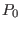
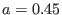

With the pressure increasing, the magnetic axis usually shifts to the
low-field-side of the device, as is shown in Fig. 32.
Figure 32:
Comparison of two equilibria obtained with
(left) and
(right),
respectively, where  is the pressure at the magnetic axis. All the
other parameters are the same for the two equilibria,
,
,
,
,
, and the LCFS is given by miller's formulas (457) and
(458) with , ,
, and
.